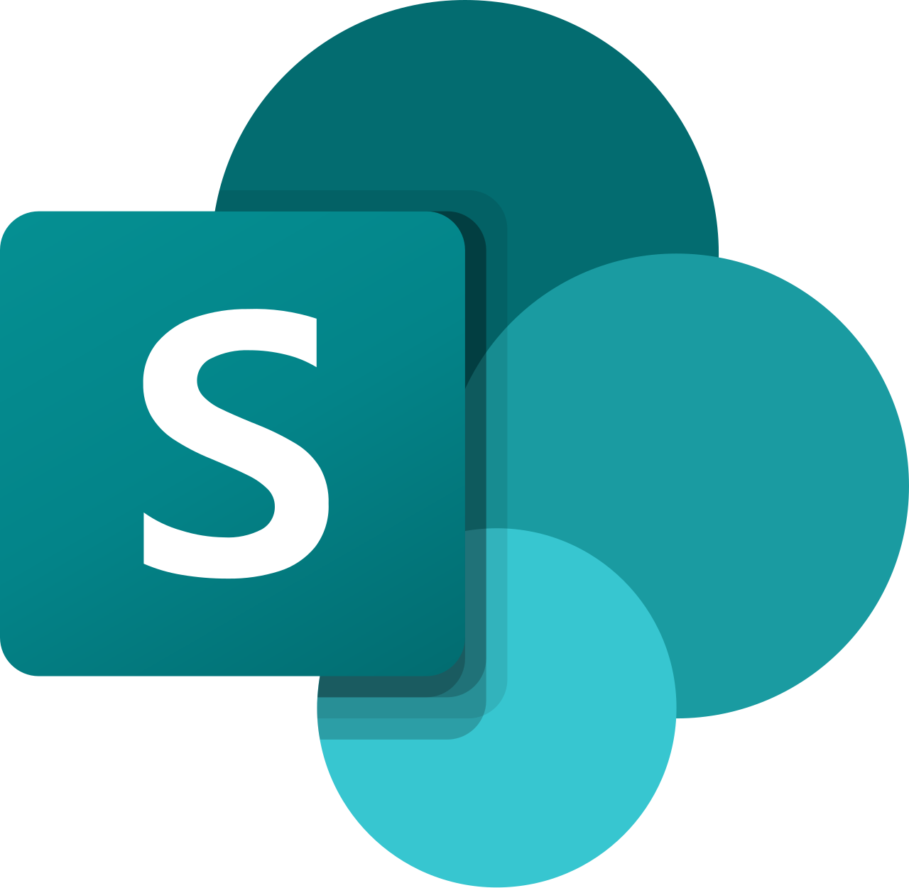

Uppercase CASE vahendid
toetavad analüüsi ja projekteerimist. Peamiselt on nad kasutusel kasutajanõuete
analüümisel ja dokumenteerimisel. Nad on mõeldud visualiseerimiseks.
Neid kasutatakse:
- Analüüsimiseks
- Dokumenteerimiseks
Ma olen kasutanud:
- Office 365
- Github

Ma pole kasutanud:
- Microsoft Azure

- Microsoft SharePoint
